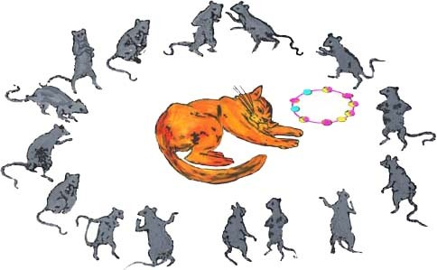

群鼠會議 拉封登著，江銘輝譯
從前有隻叫羅迪拉德的貓，造成了老鼠的大浩劫，很難找出有一隻老鼠沒有受過牠的蹂躪，害怕的留在鼠洞。節制平常的食物，過著半飽的日子。老鼠迷信認為羅迪拉德不是貓，簡直是魔鬼的化身。

圖：群鼠召開會議，商討由誰將響鈴掛在惡貓的伯脖子上。
註：Rodilard —The name no doubt taken from the famous cat Rodilardus (bacon-gnawer), in Rabelais, Pantagruel, 4, ch. 67.
有一天，這隻可怕的魔鬼貓出門去會牠的情婦，繼續牠的尋春樂，未被吃掉的老鼠立刻在老鼠葬身所在地召開會議，討論的重點是如何避開即將面臨的死亡命運。會議一開始，族裡一隻精明的長老，提出很好構想，牠提議立刻且不宜遲地在要命的惡貓脖子掛上響鈴。這樣，只要牠一展開狩獵行動，眾老鼠在小心注意鈴聲下，就可安全躲在地洞裡。
事實上長老也認為除了這個方法外，再沒有別的方法了。但是群鼠和長老立刻後悔了，可是牠們實在也想不出更好的方法。事實上，如果這個辦法可行的話，牠們早已想出來了並且去作了。無疑地，這件事情要作得漂亮，在於是否有老鼠肯去掛鈴。可是所有老鼠，一隻接一隻的說：「我不去，我不是如此的大笨蛋。」大家在這個議題，爭到筋疲力盡，沒有結果，宣布散會。
我曾經看過許多會議，有些是值得推崇的會議，參加的人也是德高望重，且作出如此明智的提案，但卻過分拘泥細節，而無結果。提案或反對時，到處充滿有智慧的專家、顧問，但要真正執行的人，卻很難找到。
譯者評論
許多會議，開會時大家都是專家、顧問，七嘴八舌喜歡發表不切實際的方法，但執行起來，卻困難重重。本寓言描述權威人士提出看起來很漂亮的提案，但執行起來既危險又不可能成功。
The Council Held By The Rats 原著
Old Rodilard,[註] a certain cat,
Such havoc of the rats had made,
It was difficult to find a rat
With nature's debt unpaid.
The few that did remain,
To leave their holes afraid,
From usual food abstain,
Not eating half their fill.
And wonder no one will
That one who made of rats his revel,
With rats passed not for cat, but devil.
Now, on a day, this dread rat-eater,
Who had a wife, went out to meet her;
And while he held his caterwauling,
The unkilled rats, their chapter calling,
Discussed the point, in grave debate,
How they might shun impending fate.
Their dean, a prudent rat,
Thought best, and better soon than late,
To bell the fatal cat;
That, when he took his hunting round,
The rats, well cautioned by the sound,
Might hide in safety under ground;
Indeed he knew no other means.
And all the rest
At once confessed
Their minds were with the dean's.
No better plan, they all believed,
Could possibly have been conceived,
No doubt the thing would work right well,
If any one would hang the bell.
But, one by one, said every rat,
"I'm not so big a fool as that."
The plan, knocked up in this respect,
The council closed without effect.
And many a council I have seen,
Or reverend chapter with its dean,
That, thus resolving wisely,
Fell through like this precisely.
To argue or refute
Wise counsellors abound;
The man to execute
Is harder to be found